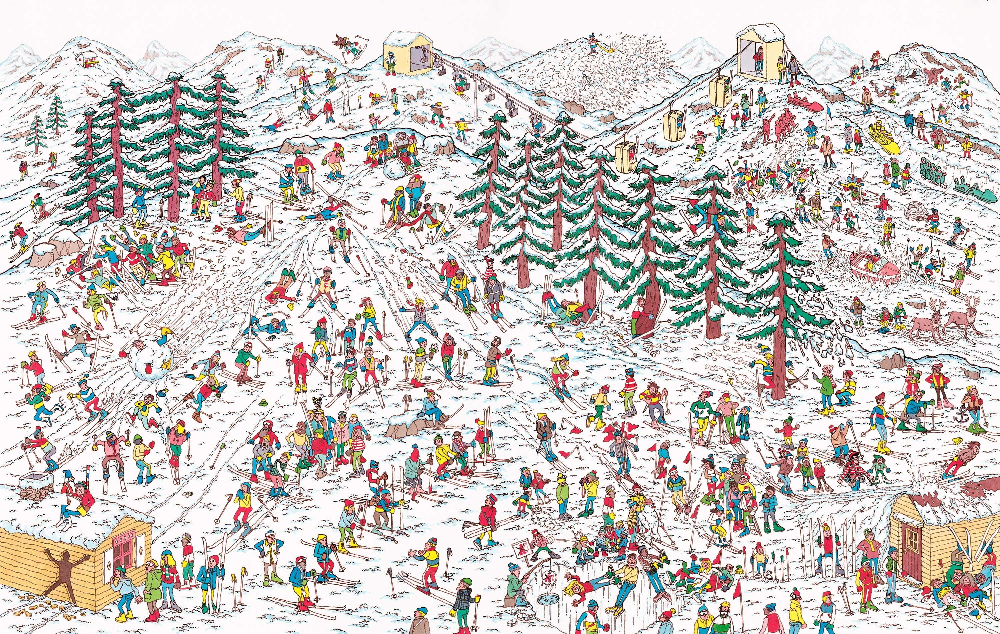
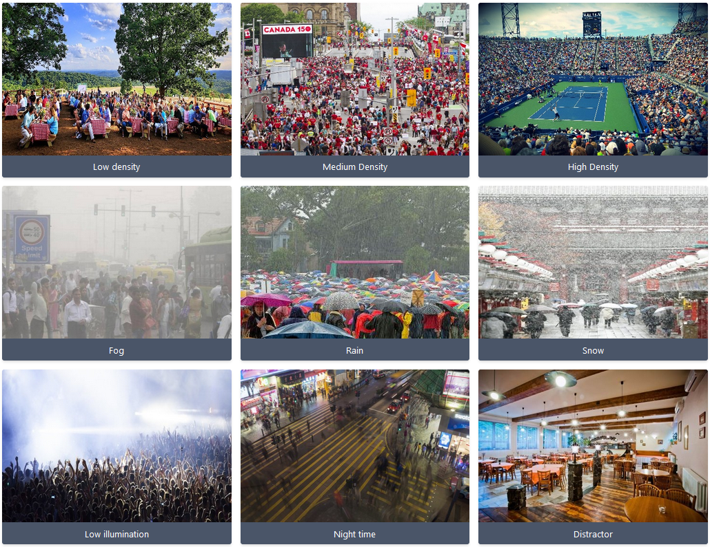
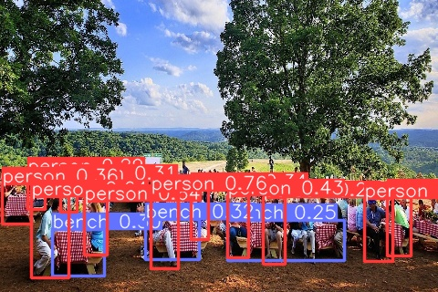
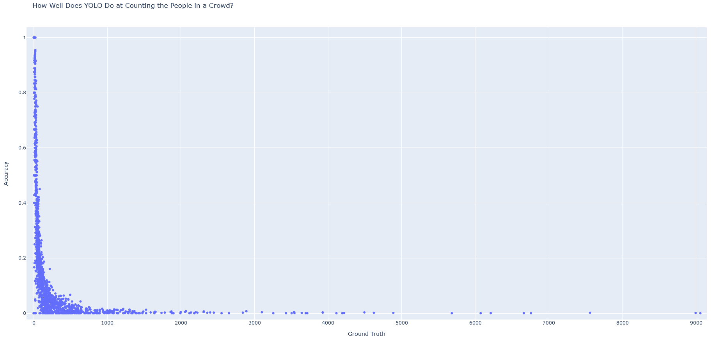
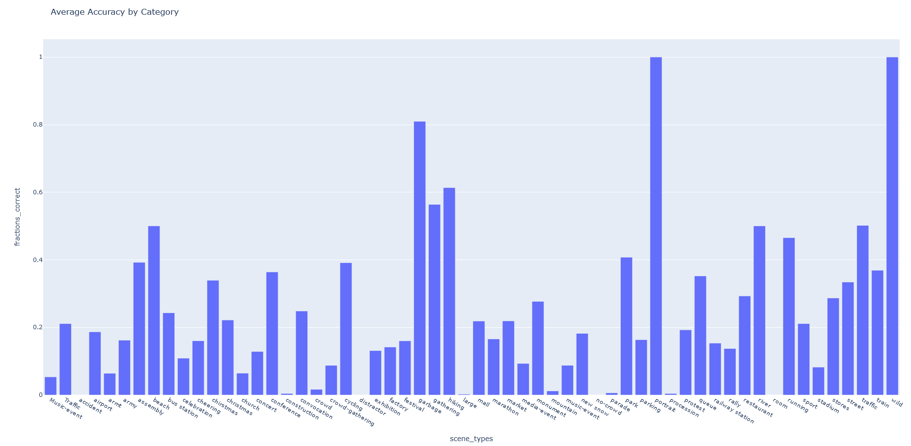

Would Crowd Detection with YOLOv8 Work?
by Grady McPeak and Kevin Robbins
The YOLO vision model got famous for its ability to do object detection in real-time. This makes it an ideal candidate for implementation in video-based surveillance systems, where a potential threat could perhaps be detected and reported automatically. However, the design and implementation of such a system presents challenges that may perhaps be insurmountable with what is currently available on the market. For example, imagine being asked to identify a dangerous or threatening individual in a clip of a large crowd, with perhaps thousands of people. The "Where's Waldo" game that follows is not something that we humans are able to do quickly. But can YOLO?
A baseline we can use to determine if this task is even possible with YOLO is to test how good it is at simply counting the number of people in a crowd. Can it put bounding boxes on every fan in a sold-out NFL stadium? Or is that level of detail just too noisy for YOLO to pick up on?
To test this, we pit the latest and best-performing version version of YOLO, YOLOv8, up against a dataset of images specifically designed to test a CV model's ability to recogznie and count the number of people in a crowd. This dataset we used is JHU-CROWD++, which boasts a large set of images of crowds ranging in sizes from a dozen or so to several thousand, all while including different variations in camera settings, weather, and other potentially obfuscating factors.
Source: JHU-CROWD++ Website
In our experiment we iterated over every image in the "test" set in the dataset (which comes pre-partitioned) and counted how many "person" bounding boxes YOLOv8 assigned in the image. Then we compared that value to the ground truth number of people in the picture, a number which was determined by human annotators of the dataset.
YOLO can tell there are a few people here!
Our overall results suggest that YOLOv8 is not the ideal tool for counting large crowds. While it does a good job when the sizes are rather small, it performance quickly plummets as crowd sizes increase.
YOLO gets overwhelmed pretty quickly
A breakdown by type of environment
These findings, of course, are not meant to imply that YOLOv8, or any previous version of the model, is "bad" by some objective measure. Rather, it tells us that even though computer vision has made massive strides in recent years, the problem of distinguishing and counting people in a crowd is still a hard problem! With all of the detail that such pictures include and all of the noise that comes along with them, this task remains a challenge even to today's cutting-edge solutions.
References
JHU-CROWD++: Large-Scale Crowd Counting Dataset and A Benchmark Method
Sindagi, Vishwanath A and Yasarla, Rajeev and Patel, Vishal M
Technical Report
2020